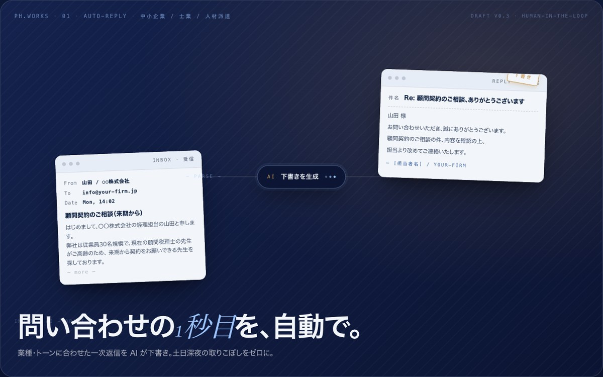
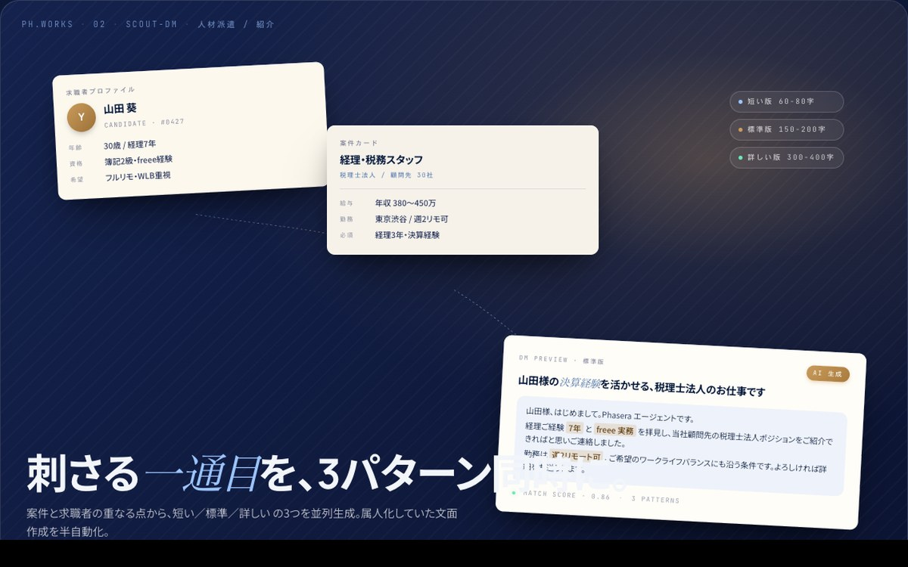
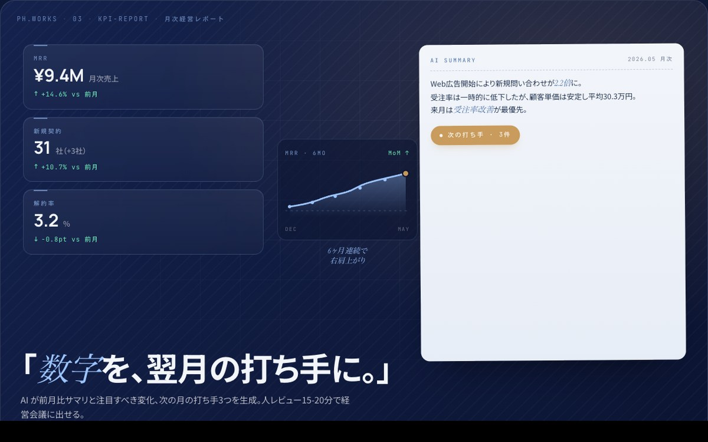
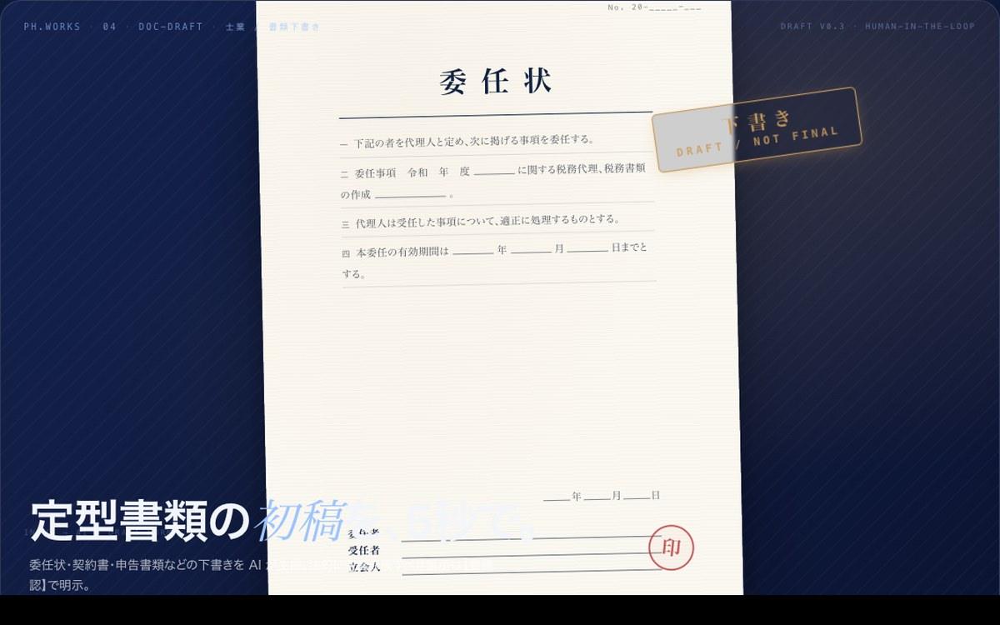
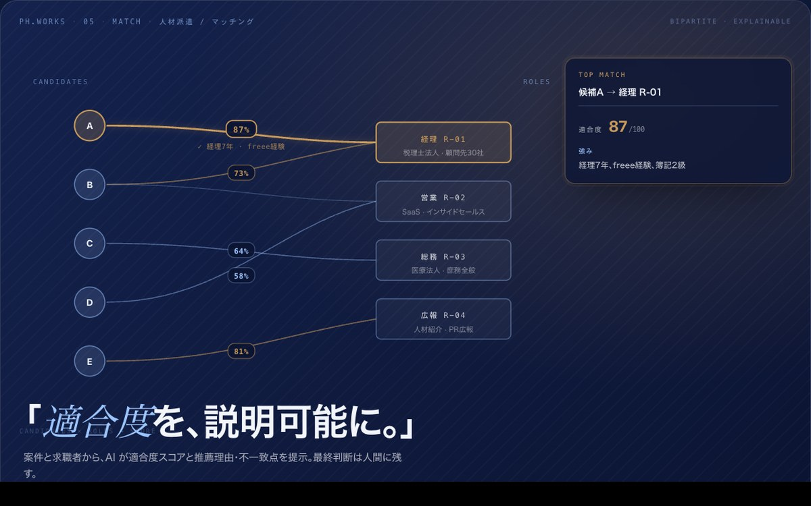

事務に、
時間が溶ける。
顧客対応・書類処理・問い合わせ。集客に向ける時間が、毎日少しずつ削られていく。
事務時間 / 年840h
Phasera は、中小企業のバックオフィスに AI エージェントを導入する伴走パートナーです。診断・KPI改善・月次伴走を、ソロで一気通貫します。士業・人材派遣・小規模事業向け。
顧客対応・書類処理・問い合わせ。集客に向ける時間が、毎日少しずつ削られていく。
代表の脳内で動いているからスケールしない。誰かに渡せず、休めず、増やせない。
大手コンサルは高すぎる。フリーランスは伴走しない。ちょうどいい受け皿がない。
データは各所に分散、結局カンで判断。投資は積んだが、見返りが見えない。
顧客対応・書類処理・問い合わせで毎日3.5時間。年間にして840時間。
代表の脳内で動くから、引き渡せず、休めず、増やせず、後継できない。
大手コンサルは高すぎる、フリーランスは伴走しない。ちょうどいい受け皿が、業界に存在しない。
顧客管理・経理・勤怠・メールがそれぞれ独立。投資はしたのに、結局カンで判断している。

濱田大夢。Phaseraの創業者であり、唯一の設計者です。診断・設計・実装・UI・運用までを一人で統合し、AIエージェントを現場に違和感なく取り入れます。
現場を 1日歩きます ──業務を棚卸し、優先順位を立てます。要件を 3日で固め、設計図を引き、データの流れを描きます。プロトタイプを 5日で実装し、画面を整え、ガードレールを敷きます。2週間で、動く MVP が現場に立ちます。運用に渡し、毎月の数字で改善します。設計から運用まで一人で持つから、判断の往復が消え、速度が出ます。
業務棚卸し・削減幅試算・優先順位の提示。「どこから手をつけるか」をデータと言葉で揃え、最初の一手の解像度を上げます。AI導入の前に、まず地図を作るフェーズです。
KPI設計→AI/エージェント導入→運用定着までを3ヶ月で並走します。問い合わせ自動応答、書類自動処理、レポート自動生成など、現場の手前で動く小さなエージェントを積み上げていきます。

AIが集めた経営指標に、人のレビューを15-20分だけ重ねます。投げっぱなしにしないための、最小単位の伴走線です。打ち手の良し悪しを「翌月の数字」で判定できる状態にしておきます。
同じ「AIエージェント」でも、中小企業の業界ごとに刺さるポイントは違います。Phaseraが特に積み上げているのは、士業のバックオフィス自動化と、人材派遣のマッチング・業務自動化の現場です。


Phaseraが提供するのはバックオフィス自動化エージェントだけではありません。Blenderを核としたフォトリアル3Dの制作を、もう一つの「並行エージェント」として並走できます。LP、ブランディング、プロダクト紹介、SNS素材まで——「AIで作って終わり」にしないよう、世界観の細部までソロで設計します。

LPのファーストビュー、ブランドキー画、プレスキットなど。Cycles / EEVEE Next で高品位に仕上げます。
プロダクトのターンテーブル、コンセプト映像、SNS縦動画まで。Blender + AI支援で短納期に対応します。
BlenderからGLB書き出し、Three.js / WebGL でブラウザに実装します。スクロール連動・ホバー反応まで一貫で対応できます。
マテリアル・ライティング・カメラを、ブランドのDNAとして固定します。3Dを「装飾」で終わらせません。

新規問い合わせの一次返信を AI が下書き、担当者は確認するだけ。土日深夜の取りこぼし対応に。

案件と求職者プロファイルを読み込み、刺さる DM 文面を自動生成。属人化していた文面作成を半自動化。

各 SaaS の指標を集約、AI が前月比とコメントを生成。人レビュー 15-20 分で月次経営会議に出せる。

顧問先情報を元に、申告書類・委任状の下書きを自動生成。最終確認のみ士業が担う運用に。

案件要件と求職者スキルを意味的に比較、適合度スコアと推薦理由を提示。一次振り分けを高速化。
Three.js + Blender 統合の Editorial LP。CT 脊椎 GLB + GPU shader particle + sticky orbit を一人で実装。3D 制作能力の証明。
AIエージェントは、目的を渡すと自律的に複数のステップを実行するAIです。チャットで一問一答する従来のAIツールと違い、メール返信・書類下書き・データ集計などを連続して処理し、人が確認するのは要所だけになります。Phaseraでは中小企業のバックオフィス業務に合わせて設計します。
問い合わせの一次返信、書類の下書き、経営指標の月次レポート、顧客フォローの自動化など、定型作業の8割を自動化できます。中小企業特有の属人化された業務フローも、伴走しながら設計・実装します。
診断オーディットが15〜30万円・2週間、KPI改善プログラムが80〜140万円・3ヶ月、月次経営レポートが3〜8万円/月です。最小構成では診断のみから始められ、効果を見て次のフェーズに進めます。
はい、士業向けには初回問い合わせの自動応答、申告書類・委任状の下書き、顧問先からの定型問い合わせの振り分けなどを実装しています。顧問獲得の前段にある事務作業を圧縮するのが狙いです。
案件と求職者プロファイルの意味的マッチング、スカウトDM文面の自動生成、面談日程調整、契約書類・派遣管理表の下書きまで自動化できます。最終判断は人に残し、属人化していた候補出しを手放せます。
freee・マネーフォワード・ジョブカン・kintone・Salesforce などのAPI連携、Gmail/Slack/Notion 等のSaaS連携に対応します。診断オーディットで現状のシステム構成を棚卸ししてから、無理のない連携設計を行います。
経営の体力が戻ると、
数字で語れる経営と、
自分の時間が、両立する。
2週間で、業務の地図が手に入ります。1営業日以内にお返事します。フォームでも、メールでも、ご都合のよい方法でご連絡ください。
フォーム以外をご希望の場合は、hamada.phasera@gmail.com 宛にご連絡ください。
ご紹介の場合は、紹介者のお名前を本文に添えていただけますと助かります。